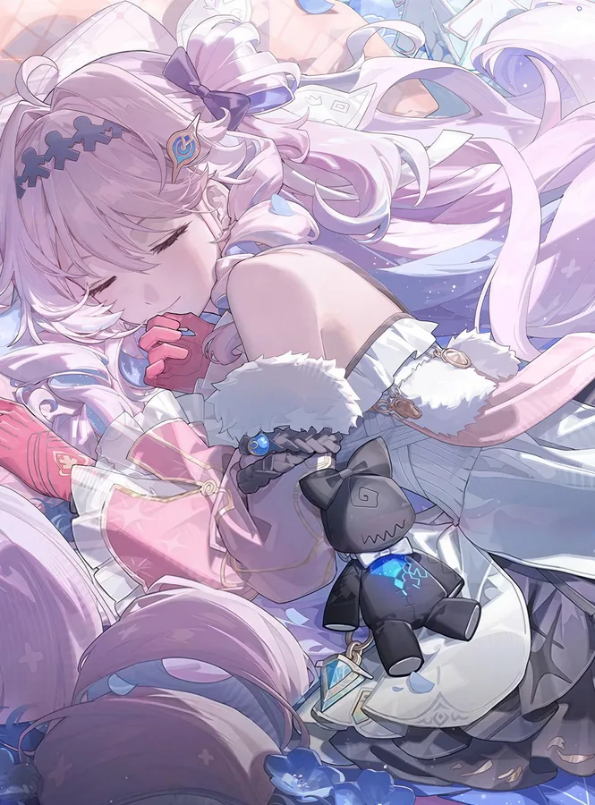

DENIA DAILY / A LITTLE ROOM FOR YOUR FAVORITES
喜欢的星光，
慢慢收藏。
从一段心动，到下一次重看。
在这里找寻作品，也为喜欢的创作者留一个位置。
2026.10.17 本期作品集 正在整理星光…

YOUR COLLECTION
星光收藏室
这里还在等一束星光
TAKE YOUR STARS WITH YOU
把喜欢的，随身带走。
收藏保存在当前浏览器。导出一份清单，换设备后也能继续。
导入只合并本站收录的作品，不会清空已有收藏。